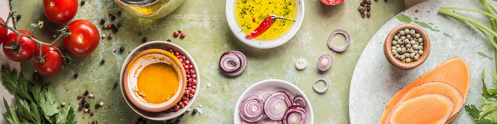
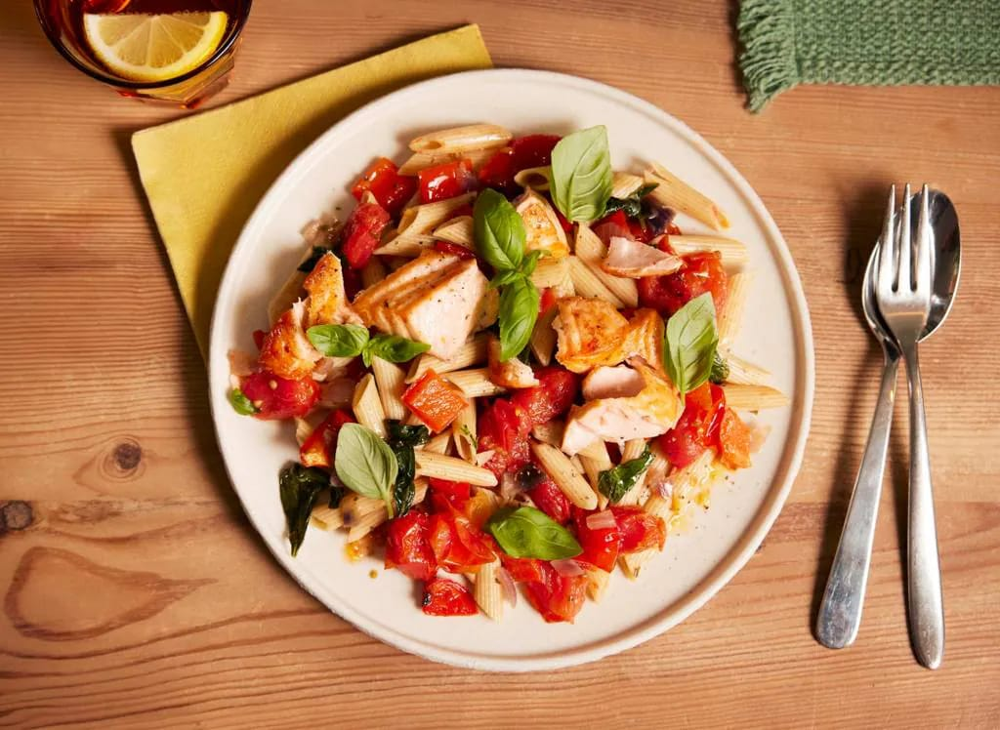

Kip met krieltjes en gemengde salade

Deze romige lasagne met ricotta, spinazie en mozzarella is gezond én tover je met de airfryer met gemak op tafel. Over comfortfood gesproken!
voorbereidingstijd:
wacht tijd:
totaal tijd:
70 MIN
70 MIN
70 MIN
ingrediënten
voor de korst:
- 2 1⁄4 kopjes bloem, plus extra voor het bestrooien
- 1 tl. koosjer zout
- 1 tl. mosterdpoeder, bij voorkeur Coleman's
- 12 el. ongezouten boter, in blokjes gesneden en gekoeld
- 6 el. ijskoud water
- 300 g volkorenpenne
- 2 zalmfilets op huid
- 15 g basilicum
- 2 el extra vierge olijfolie
voor de vulling:
- 6 plakjes bacon, in stukjes van 2,5 cm gesneden
- 2 el ongezouten boter
- 1 middelgrote gele ui, fijngehakt
- 120 ml kippenbouillon
- 1/3 kopje crème fraîche
- 2 el Engelse mosterd, zoals Colman's
- 2 el fijngehakte peterselie 1 el vers citroensap
- 2 eieren, geklopt Kosher zout en versgemalen zwarte peper, naar smaak 8 verse sardines, schoongemaakt, kop eraan
- 3 eieren, hardgekookt, gepeld en in plakjes gesneden Instructies
kook stappen
- Maak de korst: Klop bloem, mosterd en zout in een kom. Gebruik een deegsnijder, twee vorken of je vingers om de boter door het bloemmengsel te snijden, zodat er kruimels ter grootte van een erwt ontstaan. Voeg water toe; kneed het deeg tot het glad is, maar met zichtbare stukjes boter. (Je kunt de ingrediënten ook in een keukenmachine mixen.) Verdeel het deeg Snijd het deeg doormidden en druk het plat tot schijven. Wikkel de schijven in plasticfolie en laat ze 1 uur in de koelkast rusten voor gebruik.
- Maak de vulling: Verhit de bacon in een pan van 4 liter op middelhoog vuur en bak tot de bacon licht krokant is, 5-7 minuten. Schep de bacon met een schuimspaan op keukenpapier om uit te laten lekken. Voeg de boter en ui toe aan de pan en bak tot de ui goudbruin is, 5-7 minuten. Haal de pan van het vuur en klop de bouillon, crème fraîche, mosterd, peterselie, citroensap, de helft van het ei en zout erdoor; zet apart.
- Stel de taart samen en bak: Verwarm de oven voor op 200 °C. Rol op een licht met bloem bestoven oppervlak 1 deegschijf uit tot een ronde schijf van 30 cm. Leg de schijf in een taartvorm van 23 cm; snijd de randen bij, zodat er 2,5 cm deeg over de rand van de vorm hangt. Schik de sardines in een klokvormig patroon met de kopjes langs de rand van de korst. Giet de vulling over de sardines; beleg met de apart gehouden bacon, de hardgekookte eieren, zout en peper. Rol de resterende deegschijf uit tot een ronde schijf van 30 cm; snijd acht sneetjes van 2,5 cm in het deeg, ongeveer 5 cm van de rand. Leg het deeg over de taart en trek de sardinekopjes door de sneetjes. Knijp de boven- en onderranden samen en vouw ze naar binnen; druk de randen aan. Bestrijk met het resterende ei en snijd drie sneetjes van 2,5 cm in de bovenkant van de taart; bak tot de korst goudbruin is en de vulling borrelt, 35-40 minuten. Laat iets afkoelen voor het serveren.